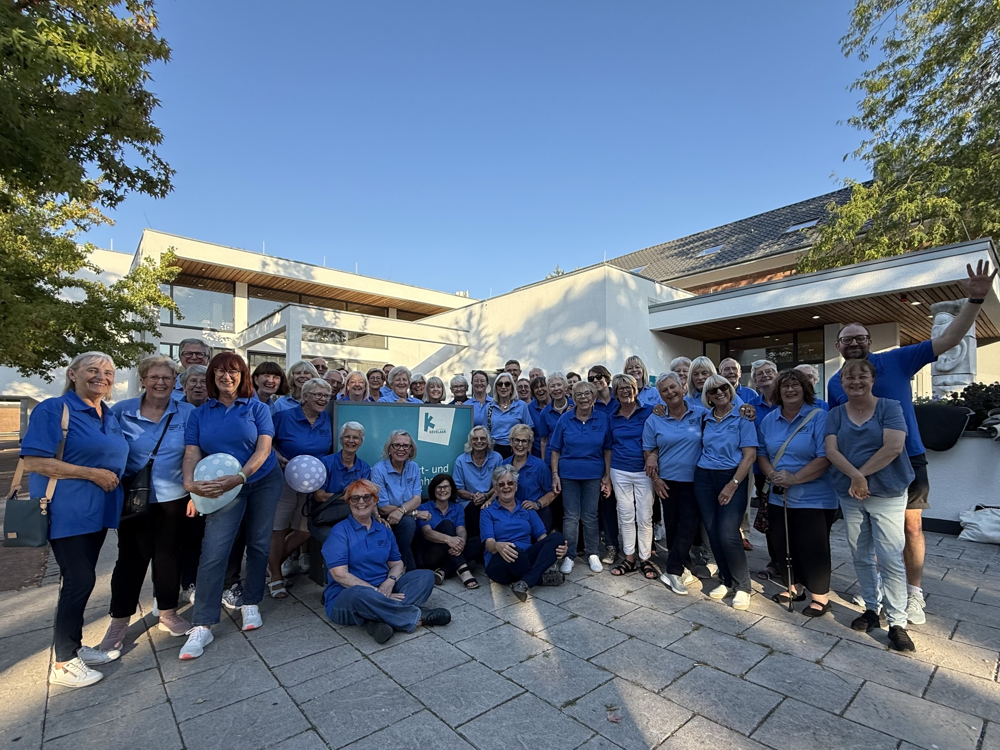

A friendly, community choir who meet weekly
to enjoy singing together.
♩ ♪ ♫
A friendly, community choir who meet weekly
to enjoy singing together.
♩ ♪ ♫
About Us
We are open to all singers and tackle a wide range of songs — no previous singing experience required. Whether you're a complete beginner or a seasoned voice, you'll find a warm welcome here.

When & Where
New members are advised to arrive around 6:45pm for their first rehearsal.
Get in Touch